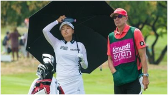

北 탄도미사일 속초 앞바다에 떨어졌다… 울릉도엔 공습경보 발령 |
|
| 북한이 2일 동해상으로 단거리 탄도미사일을 3발 발사했다. 합동참모본부는 이날 “우리 군은 오늘 오전 8시 51분쯤, 북한이 강원도 원산 일대에서 동해상으로 발사한 단거리 탄도미사일 3발을 포착했다”며 “이 중 1발은 동해 NLL(북방한계선) 이남 공해상에 탄착됐다”고 밝혔다. |
‘한국의 탈춤’ 유네스코 유산 된다 |
|
| 우리나라의 탈춤이 한국 무형문화재 중 22번째로 유네스코 인류무형문화유산 대표목록에 오를 것이 확실시된다. 유네스코는 무형유산위원회 산하 평가기구의 심사 결과 ‘한국의 탈춤(Talchum, mask dance drama in the Republic of Korea)’이 ‘등재 권고’ 판정을 받았다고 1일 밝혔다. 최종 등재 여부는 오는 28일부터 12월 3일까지 모로코 라바트에서 열리는 제17차 무형문화유산보호 정부간위원회에서 결정되며, 등재 권고 판정이 번복되는 일은 거의 없다. |
|  |
고진영, 세계랭킹 1위 내줬다... 신인 티띠꾼에 0.04점차 뒤져 |
| 지난 8월부터 손목 부상과 함께 부진의 늪에 빠진 고진영(27)이 9개월 만에 세계 1위에서 내려왔다. 고진영은 10월31일(현지시각) 발표된 세계랭킹에서 랭킹 포인트 7.09점으로, 7.13점을 기록한 아타야 티띠꾼(태국)에게 0.04점차로 2위로 내려앉았다. 고진영은 지난 1월 31일 넬리 코르다(미국)를 제치고 3개월 만에 세계 1위를 되찾았었다. 세계랭킹은 최근 2년간 대회 성적을 반영하며, 최근 대회나 메이저대회 등에 가중치가 부여된다. |